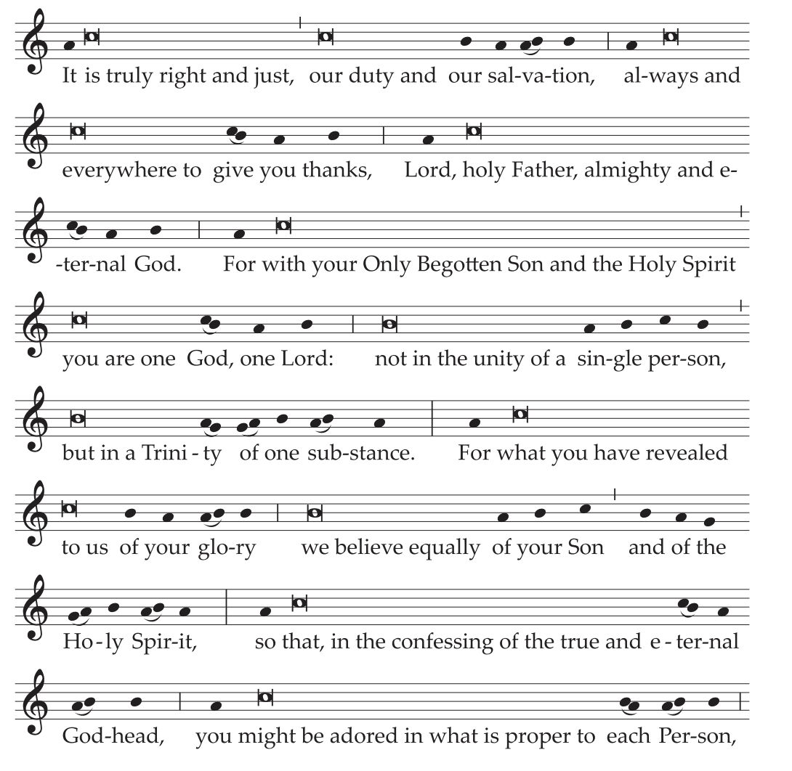
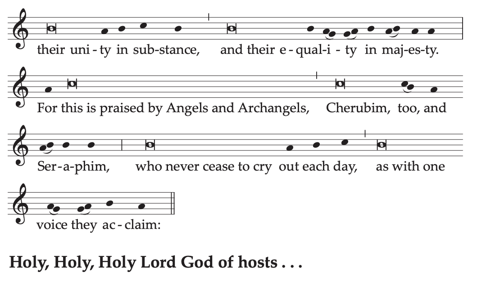
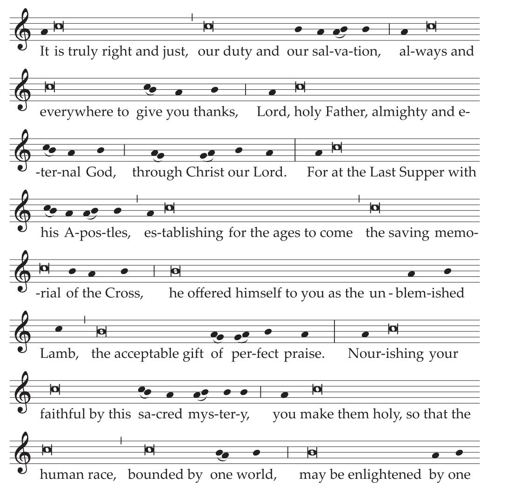
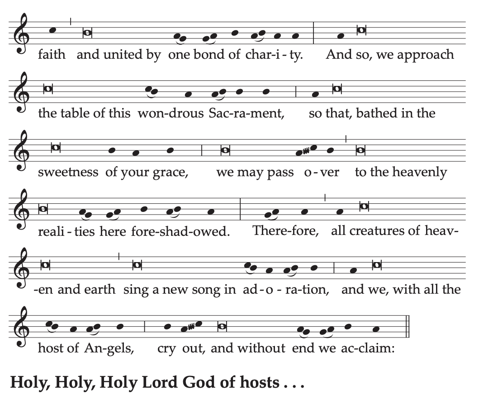
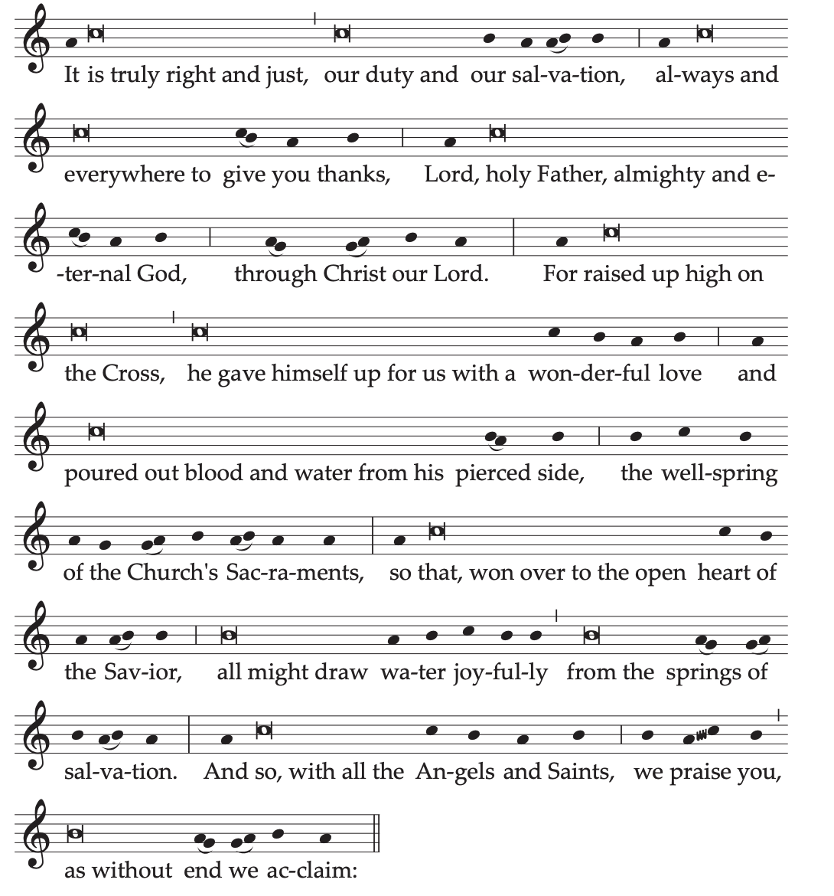
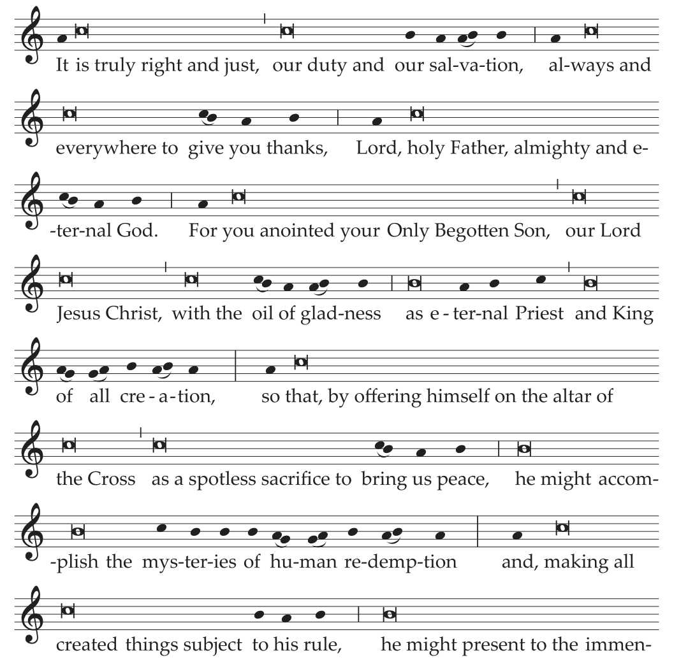
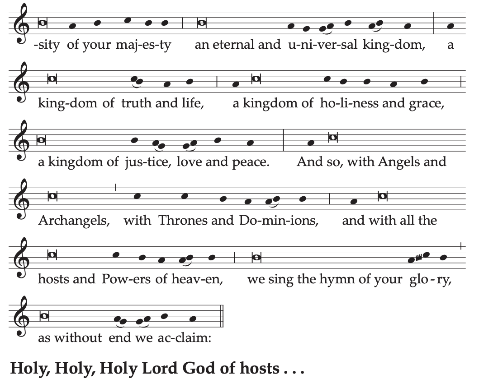

Home
Liturgy
Roman Missal
Proper of Time
First Sunday after Pentecost
THE MOST HOLY TRINITY
Solemnity
Entrance Antiphon
Blest be God the Father,
and the Only Begotten Son of God,
and also the Holy Spirit,
for he has shown us his merciful love.
The Gloria in excelsis (Glory to God in the highest) is said.
Collect
God our Father, who by sending into the world
the Word of truth and the Spirit of sanctification
made known to the human race your wondrous mystery,
grant us, we pray, that in professing the true faith,
we may acknowledge the Trinity of eternal glory
and adore your Unity, powerful in majesty.
Through our Lord Jesus Christ, your Son,
who lives and reigns with you in the unity of the Holy Spirit,
God, for ever and ever.
The Creed is said.
Prayer over the Offerings
Sanctify by the invocation of your name,
we pray, O Lord our God,
this oblation of our service,
and by it make of us an eternal offering to you.
Through Christ our Lord.
Preface: The mystery of the Most Holy Trinity.



Text without music:
V. The Lord be with you.
R. And with your spirit.
V. Lift up your hearts.
R. We lift them up to the Lord.
V. Let us give thanks to the Lord our God.
R. It is right and just.
It is truly right and just, our duty and our salvation,
always and everywhere to give you thanks,
Lord, holy Father, almighty and eternal God.
For with your Only Begotten Son and the Holy Spirit
you are one God, one Lord:
not in the unity of a single person,
but in a Trinity of one substance.
For what you have revealed to us of your glory
we believe equally of your Son
and of the Holy Spirit,
so that, in the confessing of the true and eternal Godhead,
you might be adored in what is proper to each Person,
their unity in substance,
and their equality in majesty.
For this is praised by Angels and Archangels,
Cherubim, too, and Seraphim,
who never cease to cry out each day,
as with one voice they acclaim:
Holy, Holy, Holy Lord God of hosts...
Communion AntiphonGal 4: 6
Since you are children of God,
God has sent into your hearts the Spirit of his Son,
the Spirit who cries out: Abba, Father.
Prayer after Communion
May receiving this Sacrament, O Lord our God,
bring us health of body and soul,
as we confess your eternal holy Trinity and undivided Unity.
Through Christ our Lord.
[In the Dioceses of the United States]
Sunday after the Most Holy Trinity
THE MOST HOLY BODY AND BLOOD OF CHRIST
(CORPUS CHRISTI)
Solemnity
Entrance AntiphonCf. Ps 81 (80): 1
He fed them with the finest wheat
and satisfied them with honey from the rock.
The Gloria in excelsis (Glory to God in the highest) is said.
Collect
O God, who in this wonderful Sacrament
have left us a memorial of your Passion,
grant us, we pray,
so to revere the sacred mysteries of your Body and Blood
that we may always experience in ourselves
the fruits of your redemption.
Who live and reign with God the Father
in the unity of the Holy Spirit,
God, for ever and ever.
The Creed is said.
Prayer over the Offerings
Grant your Church, O Lord, we pray,
the gifts of unity and peace,
whose signs are to be seen in mystery
in the offerings we here present.
Through Christ our Lord.
Preface: The fruits of the Most Holy Eucharist.


Text without music: Preface II or I of the Most Holy Eucharist.
Communion AntiphonJn 6: 57
Whoever eats my flesh and drinks my blood
remains in me and I in him, says the Lord.
Prayer after Communion
Grant, O Lord, we pray,
that we may delight for all eternity
in that share in your divine life,
which is foreshadowed in the present age
by our reception of your precious Body and Blood.
Who live and reign for ever and ever.
It is desirable that a procession take place after the Mass in which the Host to be carried in the procession is consecrated. However, nothing prohibits a procession from taking place even after a public and lengthy period of adoration following the Mass. If a procession takes place after Mass, when the Communion of the faithful is over, the monstrance in which the consecrated host has been placed is set on the altar. When the Prayer after Communion has been said, the Concluding Rites are omitted and the procession forms.
Friday after the Second Sunday after Pentecost
THE MOST SACRED HEART OF JESUS
Solemnity
Entrance AntiphonPs 33 (32): 11, 19
The designs of his Heart are from age to age,
to rescue their souls from death,
and to keep them alive in famine.
The Gloria in excelsis (Glory to God in the highest) is said.
Collect
Grant, we pray, almighty God,
that we, who glory in the Heart of your beloved Son
and recall the wonders of his love for us,
may be made worthy to receive
an overflowing measure of grace
from that fount of heavenly gifts.
Through our Lord Jesus Christ, your Son,
who lives and reigns with you in the unity of the Holy Spirit,
God, for ever and ever.
Or:
O God, who in the Heart of your Son,
wounded by our sins,
bestow on us in mercy
the boundless treasures of your love,
grant, we pray,
that, in paying him the homage of our devotion,
we may also offer worthy reparation.
Through our Lord Jesus Christ, your Son,
who lives and reigns with you in the unity of the Holy Spirit,
God, for ever and ever.
The Creed is said.
Prayer over the Offerings
Look, O Lord, we pray, on the surpassing charity
in the Heart of your beloved Son,
that what we offer may be a gift acceptable to you
and an expiation of our offenses.
Through Christ our Lord.
Preface: The boundless charity of Christ.

Text without music:
V. The Lord be with you.
R. And with your spirit.
V. Lift up your hearts.
R. We lift them up to the Lord.
V. Let us give thanks to the Lord our God.
R. It is right and just.
It is truly right and just, our duty and our salvation,
always and everywhere to give you thanks,
Lord, holy Father, almighty and eternal God,
through Christ our Lord.
For raised up high on the Cross,
he gave himself up for us with a wonderful love
and poured out blood and water from his pierced side,
the wellspring of the Church’s Sacraments,
so that, won over to the open heart of the Savior,
all might draw water joyfully from the springs of salvation.
And so, with all the Angels and Saints,
we praise you, as without end we acclaim:
Holy, Holy, Holy Lord God of hosts...
Communion AntiphonCf. Jn 7: 37-38
Thus says the Lord:
Let whoever is thirsty come to me and drink.
Streams of living water will flow
from within the one who believes in me.
Or:Jn 19: 34
One of the soldiers opened his side with a lance,
and at once there came forth blood and water.
Prayer after Communion
May this sacrament of charity, O Lord,
make us fervent with the fire of holy love,
so that, drawn always to your Son,
we may learn to see him in our neighbor.
Through Christ our Lord.
Last Sunday in Ordinary Time
OUR LORD JESUS CHRIST, KING OF THE UNIVERSE
Solemnity
Entrance AntiphonRev 5: 12; 1: 6
How worthy is the Lamb who was slain,
to receive power and divinity,
and wisdom and strength and honor.
To him belong glory and power for ever and ever.
The Gloria in excelsis (Glory to God in the highest) is said.
Collect
Almighty ever-living God,
whose will is to restore all things
in your beloved Son, the King of the universe,
grant, we pray,
that the whole creation, set free from slavery,
may render your majesty service
and ceaselessly proclaim your praise.
Through our Lord Jesus Christ, your Son,
who lives and reigns with you in the unity of the Holy Spirit,
God, for ever and ever.
The Creed is said.
Prayer over the Offerings
As we offer you, O Lord, the sacrifice
by which the human race is reconciled to you,
we humbly pray
that your Son himself may bestow on all nations
the gifts of unity and peace.
Through Christ our Lord.
Preface: WHICH.


Text without music:
V. The Lord be with you.
R. And with your spirit.
V. Lift up your hearts.
R. We lift them up to the Lord.
V. Let us give thanks to the Lord our God.
R. It is right and just.
It is truly right and just, our duty and our salvation,
always and everywhere to give you thanks,
Lord, holy Father, almighty and eternal God.
For you anointed your Only Begotten Son,
our Lord Jesus Christ, with the oil of gladness
as eternal Priest and King of all creation,
so that, by offering himself on the altar of the Cross
as a spotless sacrifice to bring us peace,
he might accomplish the mysteries of human redemption
and, making all created things subject to his rule,
he might present to the immensity of your majesty
an eternal and universal kingdom,
a kingdom of truth and life,
a kingdom of holiness and grace,
a kingdom of justice, love and peace.
And so, with Angels and Archangels,
with Thrones and Dominions,
and with all the hosts and Powers of heaven,
we sing the hymn of your glory,
as without end we acclaim:
Holy, Holy, Holy Lord God of hosts...
Communion AntiphonPs 29 (28): 10-11
The Lord sits as King for ever.
The Lord will bless his people with peace.
Prayer after Communion
Having received the food of immortality,
we ask, O Lord,
that, glorying in obedience
to the commands of Christ, the King of the universe,
we may live with him eternally in his heavenly Kingdom.
Who lives and reigns for ever and ever.